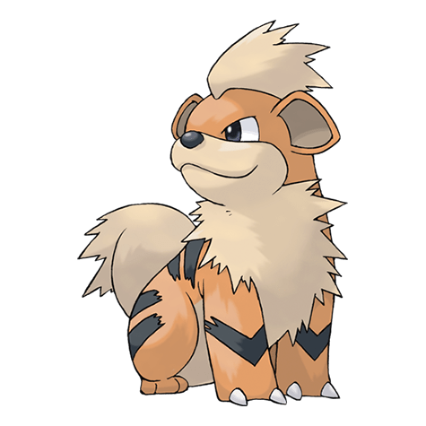
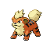

Назад
Гроулит

Гроулит — Покемон 1 поколения под номером 58 в Покедекс. Обитает он в регионе Канто и относится к Огненому типу. У Гроулита прекрасное обоняние. Ему достаточно что-то понюхать, чтобы запомнить этот запах навсегда. Этот Покемон использует своё развитое обоняние, чтобы определять эмоции других живых существ.
Тип:
Огненый
Эволюция

# 058 Гроулит
=>
# 059 Арканайн